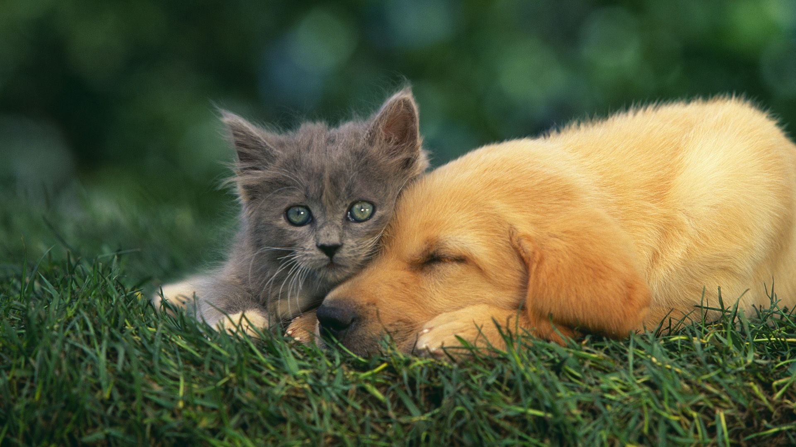
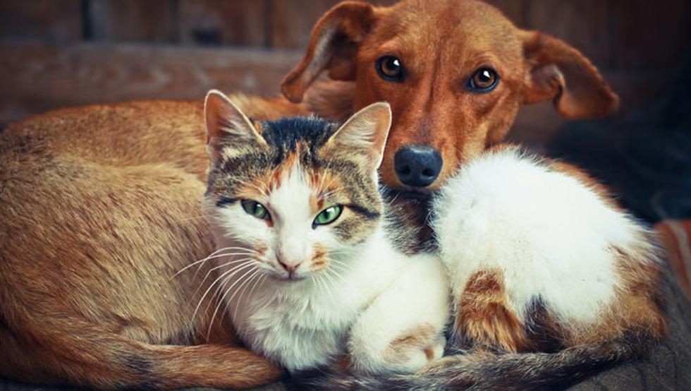
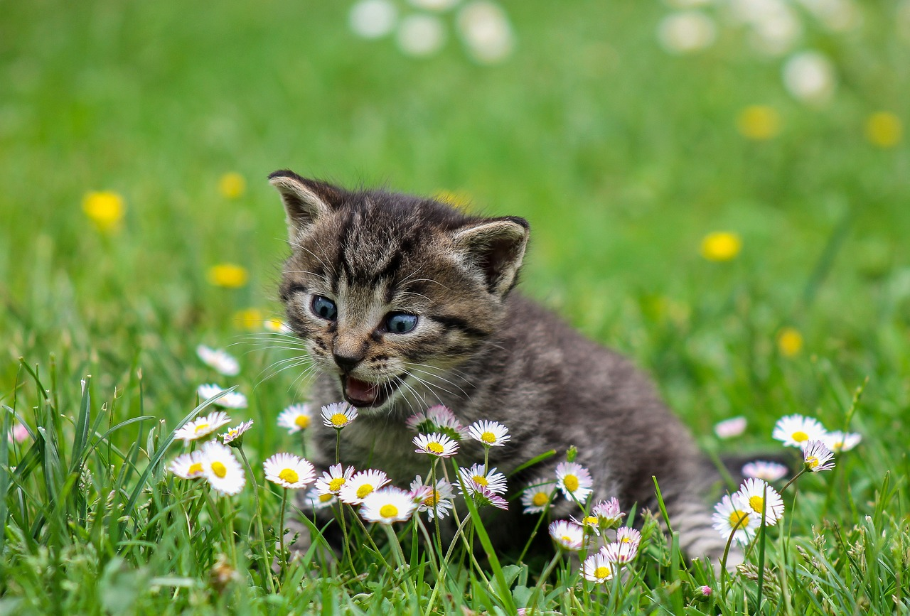

¿Qué prefieres, los perros o los gatos?
Aqui sabras cual de ambos vas a escojer
Descubre las curiosidades más sorprendentes de perros y gatos.
Los perros y los gatos han sido los compañeros de vida del ser humano durante siglos, y es fascinante descubrir cuánto conocimiento nuevo podemos aprender sobre estas criaturas aparentemente familiares.la capacidad de los perros para detectar enfermedades a través del olfato hasta la habilidad de los gatos para comunicarse con sus dueños a través del lenguaje corporal, los datos curiosos sobre perros y gatos no solo son interesantes, sino que también pueden ayudarnos a comprender mejor estos animales y enriquecer nuestra relación con ellos. A medida que continuamos investigando y aprendiendo más sobre estos amigos peludos, podemos esperar descubrir aún más información fascinante sobre nuestros compañeros más leales.
Los perros y los gatos se han convertido en compañeros leales durante muchos siglos. Aunque son mascotas populares, ambos poseen habilidades sorprendentes, como la asombrosa capacidad olfativa de los perros o la impresionante capacidad de salto de los gatos. Estos rasgos se derivan de las habilidades innatas de cada especie, lo que los convierte en seres asombrosos y adorables.
¿Cuáles son las curiosidades del gato?

Los gatos son animales sorprendentes. Además de su flexibilidad y agilidad, pueden saltar desde una altura de más de tres metros. Resulta asombroso que puedan rotar sus orejas hasta 180 grados. Otro hecho curioso es que estos animales pueden dormir hasta 14 horas por día. Son nocturnos y, debido a eso, suelen estar más activos durante la tarde. Todo esto hace de los gatos seres fascinantes e intrigantes.
Los gatos destacan por su agilidad y flexibilidad, pudiendo saltar a más de 3 metros. Sorprendentemente, pueden mover sus orejas 180 grados y durmien hasta 14 horas al día. Sus hábitos nocturnos les mantienen activos durante la tarde, lo que les convierte en animales interesantes y cautivadores.
¿Cuál de estos animales tiene una vida más larga, un perro o un gato?

Según el Libro blanco de los animales domésticos de 2022 de Anicom Holdings, los gatos tienen una vida más larga en promedio que los perros. Los datos extraídos de sus seguros de mascotas revelan que los gatos viven una media de 14,4 años, mientras que los perros viven en promedio 14,1 años. Es importante tener en cuenta que la longevidad de ambos animales depende de diversos factores, como la raza, la alimentación y el cuidado que se les proporcione.
¿Cual de estos dos animales es mas inteligente?

Al tratarse de espacies distintas, es muy complicado determinar desde un punto de vista científico cuál de estos dos animales es más inteligente. Un estudio publicado en la revista New Scientist revela que las capacidades cognitivas son más elevadas en el caso de los perros [1], pero además, un estudio colaborativo en diferentes universidades señala que los perros tienen el doble de neuronas en el córtex cerebral que los gatos [2], lo que indicaría que son más inteligentes. Así pues, este primer round lo ganan los perros. Los gatos superan en longevidad a los perros, según Anicom Holdings. En promedio, los gatos viven 14,4 años, mientras que los perros viven alrededor de 14,1 años. Factores como la alimentación y la raza influyen en la longevidad de ambas mascotas. 
Los perros y gatos son mascotas increíblemente populares en todo el mundo. A menudo pensamos que los conocemos bien, pero hay datos fascinantes que podrían sorprendernos. ¿Sabías que muchos perros pueden detectar enfermedades como el cáncer y la diabetes? O que los gatos tienen músculos en sus oídos que les permiten girar sus orejas 180 grados debido a sus músculos especiales? Además, los perros tienen un olfato muy desarrollado que les permite detectar olores que los humanos no pueden percibir. Estos son solo algunos de los increíbles hechos que hacen que nuestras mascotas sean aún más especiales.
Tanto los perros como los gatos han sido compañeros fieles del hombre durante cientos de años. Además de ser excelentes mascotas, estos animales tienen algunos rasgos y comportamientos sorprendentes. Por ejemplo, los perros tienen una capacidad olfativa cientos de veces mayor que la de los humanos, mientras que los gatos pueden saltar hasta seis veces su propia altura. En ambos casos, sus habilidades innatas entregan los rasgos característicos de estas dos mascotas tan adorables.
Cual es el animo de tu mascota

En esta lista veras el animo de tu mascota
- Cariñoso
- Juegueton
- Perezoso
- Divertido
- gruñon
- carismatico
Has click aqui >De perros y gatos facebook